Here we will study how to solve a 3x3 Rubik's cube. There are many ways to do it. The method introduced here requires minimum memory work and is very intuitive. We solve it layer by layer, starting with the white layer. Of course we could begin with any color. Here we just follow the tradition. After we solve the white layer, we will set it as the bottom layer then solve the second layer; Then we will solve the top layer.
In this step, we will solve the white layer, it will be the bottom layer in our final solved cube.
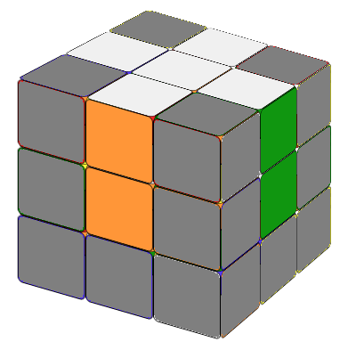
But to make it easy, we will work it on the top layer. That is we try to make the top layer look like a white cross with matching edegs on each side. There are many ways to do it, and I trust that you can work it out youself.Now we maneuver the cube of the top layer so all 4 corners are white too. But white is not the only condition. Let's look at Fig.1.2. The up color of the right-back corner cubie is white. But it's not the one we want. Why? Because the center piece of the right layer is green. Eventually every cubie should have green color on the right side. But the right-back corner piece on the right side is blue. It should be green. Match the green center piece on the right face. At the end of this step, your cube should look like Fig 1.2 with top layer all white and the edegs have matching color to their corresponding center pieces.
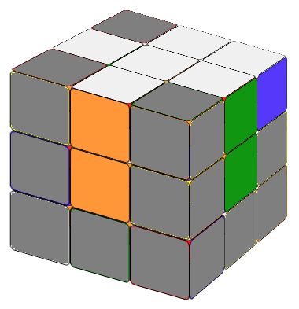
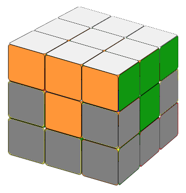
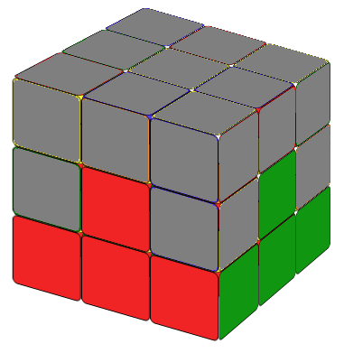
Now we rotate the cube 180 degrees so the white layer is on the bottom (Fig 1.3).
Now we want to solve the second layer. The center pieces of the second layer has solved from step 1. We need to make the edges of the second layer the same color as the center piece. Try to rotate the top layer of the cube, then we will encounter three cases:
(a) We need to move the up-front edge cubie (facing us) to the right-front edge position (Fig 2.1). In this case we could apply the following formula. We call it "To the Right":
(b) A mirror image of situation (a) where we need to move the up-front edge cubie to the left-front edge position (Fig 2.2) We call it "To the Left":
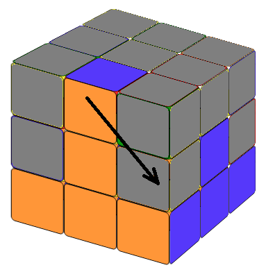
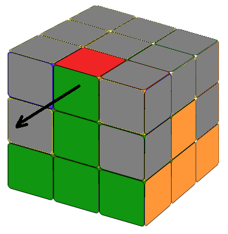
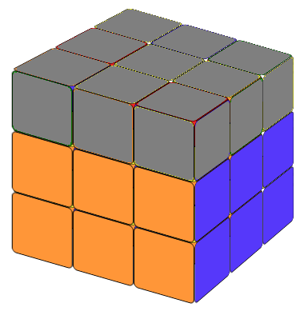
Notice that the first step of the formula always moves the cubie farther away from the postion it wants to go.
(c) None of the above.
In this case, we just need to apply either of the formulas above once, to put a random piece to replace the edge which we need for case (a) and (b), then the cube will be in status (a) or (b), we then apply the formula accordingly. This step takes a bit more time as we have a few edegs to solve. You will use these formulas again and again and you will be able to memorise them in no time.
After step 2, the top yellow face will only have four situations: it has a yellow cross on the top, in which case we do not need to do anything; or it has a yellow center; or it has a shape looks like a 90 degree rotated L; or it has a horizontal yellow line on the top. Our first step is to make a yellow cross on the top.
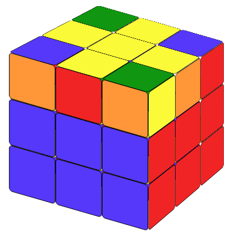
Here we need remember a simple formula:
You can check the formula animation here. Let's call it "Fruit".
FruitThis formula will be used more than once. If it's only the center that's yellow, you will need to use the formula 3 times; If you have a 90 degree rotated L, you'll need to use the formula twice; if you have a line (make the line horizontal to you), you only need to use it once.
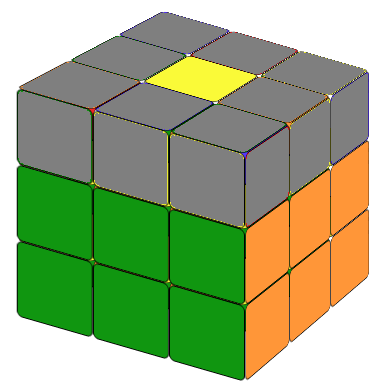
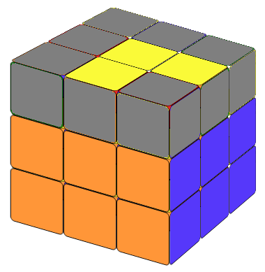
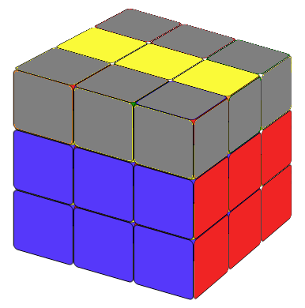
Notice that Fig 3.2 still counts as a 90 degree L. And if you get a vertical yellow line (Fig 3.3), you need to rotate the cube so it become a horizontal yellow line.
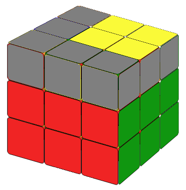
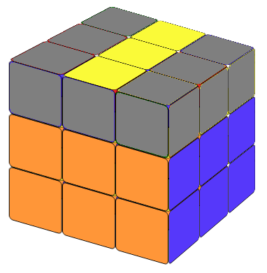
Now the top yellow cross is solved. There are 4 corner cubies on the top layer we need to deal with. The top layer now will be in one of the five situations below.
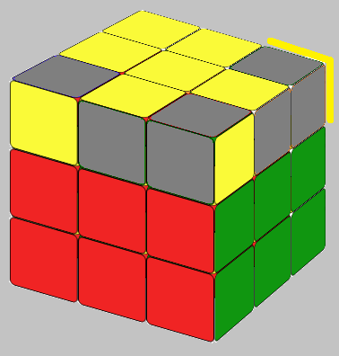
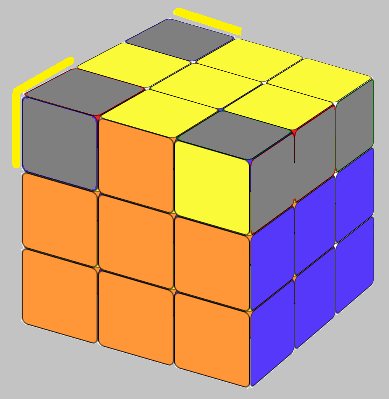
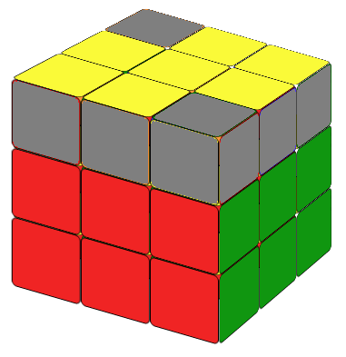
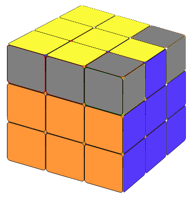
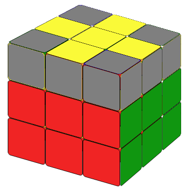
We call it clockwise fish pattern. (Does it look like a fish head?)
To solve this, try the Counter-Clockwise Fish formula:
The yellow color patterns on the top is the exact mirror image of situation 1. We call it clockwise fish pattern.
To solve this we apply the Clockwise Fish formula:
Notice that in the formula above, the top layer is always turning clockwise. That is why we call it clockwise fish pattern.
These two formulas are important. We will use it on the last step too. So make sure you understand which pattern is counter clockwise fish pattern, which pattern is clockwish fish pattern and how to position them.
In this case, we will still use the two formulas above, but we need to use them more than once. If there are 2 cubies whose colors are not right, we maneuver the cube so that the color at the back of the left-back-up cubie is yellow; if there are 4 cubies whose colors are not right, we maneuver the cube so that the color at the left of the left-back-up cubie is yellow. (So "2 on the back 4 on the left") Then applying the counter-clockwise fish formula, we will get the fish pattern.
Here we have two cases:
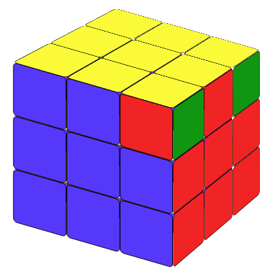
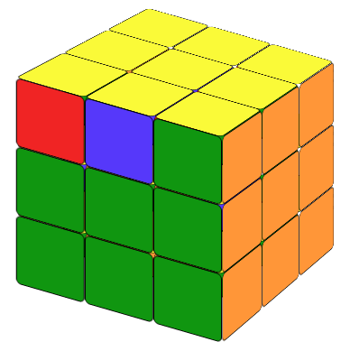
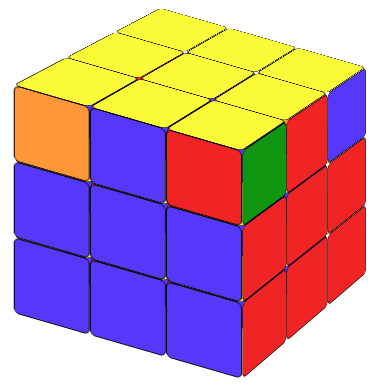
After applying the formula, do not forget to rearrange the cube so the yellow face is the up layer again.
This is the last step. We're almost there. Now the top yellow layer of the cube will only be one of in the following 4 situations.
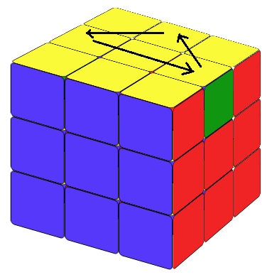
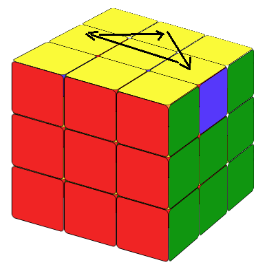
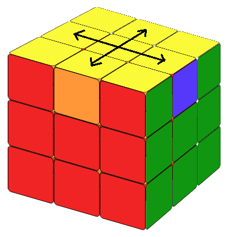
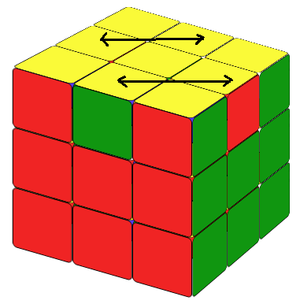
For the first two cases (Fig 6.1 and Fig 6.2), there is one side which is solved and there are three cubies which have wrong colors.
In these cases, we need to use both clockwise fish pattern formula and counter-clockwise fish pattern formula, but in different order.
Let us position the cube so the solved side facing us.
In this case, we will first use the counter-clockwise fish formula. After that, the cube will show a clockwise fish shape. We reposition the cube as in Fig 3.21 and apply the clockwise fish pattern formula. The cube then will be solved.
counter-clockwise fish + rotate the whole cube to the right + clockwise fishIn this case, we will first use the clockwise fish formula. After that, the cube will show a a counter-clockwise fish shape. We then reposition the cube as in Fig 3.20, and apply the counter-clockwise fish formula, the cube then will be solved.
clockwise fish + rotate the whole cube to the left + counter-clockwise fish
You could save a lot of time by memorizing another two very simple formulas.
Now we're done! You have solved the Rubik's cube. Enjoy.